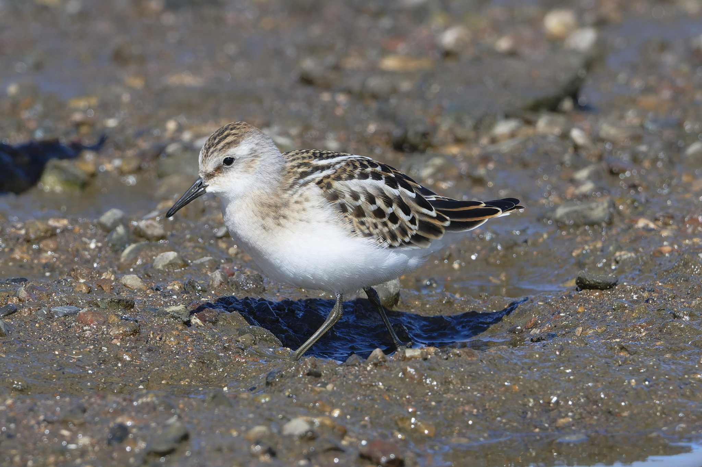

Calidris minuta — Un minuscule limicole entre toundra arctique et rivages arabes de passage et d’hiver
Identité et reconnaissance
Le Bécasseau minute, Calidris minuta, est un très petit limicole de la famille des Scolopacidés. Il possède un bec noir fin et droit, des pattes noires et un dessous blanc. Long d’environ 12–14 cm, il est nettement plus petit que le Bécasseau variable qu’il accompagne parfois. En plumage nuptial, tête et dessus deviennent roux avec des marques sombres; en hiver, le dessus est surtout gris. Les proportions du bec, du corps et des pattes restent utiles lorsque les couleurs chaudes s’atténuent.
Âge, sexe et espèces proches
Les sexes se ressemblent sur le terrain. Les jeunes portent des liserés pâles et des lignes claires sur le dos pouvant dessiner un V; ils paraissent plus dessinés que les adultes hivernaux. Le Bécasseau de Temminck possède des pattes plus claires, olive ou jaunâtres; le variable a un bec plus long et courbé. Le sanderling est plus grand et beaucoup plus pâle en hiver. Le Bécasseau à cou roux peut être très semblable hors plumage nuptial. Pour une observation inhabituelle, des photographies sous plusieurs angles sont préférables à une identification fondée sur la poitrine seule.
Milieux, alimentation et comportement
Vasières découvertes, berges de lacs, lagunes, salines et estrans constituent ses milieux alimentaires, en eau douce comme salée. Il court rapidement et picore de petites proies à la surface ou dans une eau extrêmement peu profonde: insectes, larves, crustacés, petits mollusques et vers. Il peut rejoindre des groupes mixtes, puis se rassembler au repos lorsque l’eau recouvre les secteurs alimentaires. Une rive nue n’est donc pas un espace vide: elle offre une ressource dépendant de petits animaux et des périodes d’exposition de la vase.
Reproduction et cycle de vie
Il se reproduit dans la toundra du nord de l’Eurasie, loin des étapes et hivernages arabes. La ponte habituelle comprend quatre œufs; l’incubation dure environ 20–25 jours et les jeunes volent vers 15–21 jours. Les poussins naissent couverts de duvet et mobiles. Des études arctiques décrivent une prise en charge individuelle: une femelle peut confier une ponte au mâle et s’occuper d’une autre. Les invertébrés disponibles pendant l’été polaire soutiennent la croissance rapide des jeunes.
Répartition et saisonnalité arabes
La liste libanaise de 2020 indique des passages communs au printemps et de début août à fin octobre. Au Qatar, c’est un migrateur et hivernant commun, signalé tous les mois; Oman le décrit comme abondant au passage et en hiver. L’évaluation nationale émiratie distingue les oiseaux qui restent pour hiverner de ceux poursuivant vers le sud; certains immatures demeurent durant l’été. À l’ouest, des dénombrements documentent l’hivernage en Mauritanie. Fin octobre peut ainsi correspondre à la fin du passage dans un pays et au début d’un séjour prolongé dans un autre.
Écologie et conservation
Son statut mondial est «Préoccupation mineure». Sa dépendance à une succession de sites sûrs rend toutefois importante la protection des berges et reposoirs. L’évaluation émiratie relève des risques potentiels liés aux usages côtiers et à la pollution pétrolière. Consommateur d’invertébrés et proie de rapaces, il appartient aux réseaux alimentaires des zones humides. Vasières préservées du remblaiement, eaux peu profondes propres et reposoirs tranquilles maintiennent les fonctions du milieu. Un groupe dense ne suffit pas à décrire la tendance d’une voie migratoire entière.
Références
Naturalis — Birds of Europe: Calidris minuta
RSPB — Little Stint identification
New Zealand Birds Online — Little stint
BTO — BirdFacts: Little Stint
Tulp and colleagues — Body mass patterns of Little Stints, Ibis (2002)
Ramadan-Jaradi and colleagues — Updated checklist of the birds of Lebanon, Sandgrouse 42 (2020)
Qatar Bird Observation Group — Little Stint
Birds of Oman — species database
UAE National Red List of Birds (2021) — Calidris minuta
Revue Marocaine des Sciences Agronomiques et Vétérinaires 2(1) (2014) — Mauritanian waterbird counts
CMS — Calidris minuta species account
Photo : Лариса Артемьева — CC0-1.0.